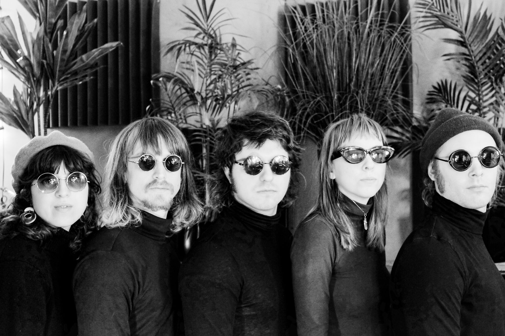

LA007: Déjà Blue - "Awake But See-Through"
Release: 4/20/18

Deja Blue is stepping out music for a night yet unraveled. Liam Hindahl is peeling open the curtains at what it means to feel yourself move through the world. It's movement music, but does not fall into half baked tropes of dance friendly pop merely in order to touch on that feeling. Rather, Hindahl takes cues from cerebral dance luminaries such as Todd Terje, Yellow Magic Orchestra and Jaako Eino Kalvei as he stokes the embers of night time auras. On title track, "awake but see-through," questions arise about how communication and convenience corrupt the human spirit. "Losing time...Why ain't it all free," asks Hindahl? Not as a glassy eyed jammer, but as a yearning for us to eschew the simulation and get down with our bad selves. On the motorik-driven "shades of blue," the refrain of "I want to go back, I want to go back in time," feels as if Liam is jettisoning the space craft as he speaks, pleading time travel into existence. He wants to let the light in, but only as much as it allows us to find our next step on the dance floor.

{kind=link}
RIYL: Todd Terje, Yellow Magic Orchestra, Jaako Eino Kalvei, AIR
Format: CS / DIG
Déjà Blue is a multi-instrumental manifestation of one sensual young mind blossoming into his own retro-futuristic grooves. Originally a solo project of Oh, Rose drummer Liam Hindahl, the outfit has recently grown five deep. It's 4 am coffee music...walking through thigh-high daisy music...."I've got a crush on the rain" music. From a one-bed apartment above the city streets to a heavy meadow on the edge of town, Déjà Blue has been a secretive bedroom metamorphosis since it's inception.